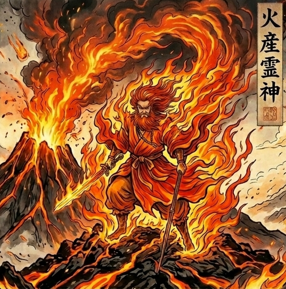
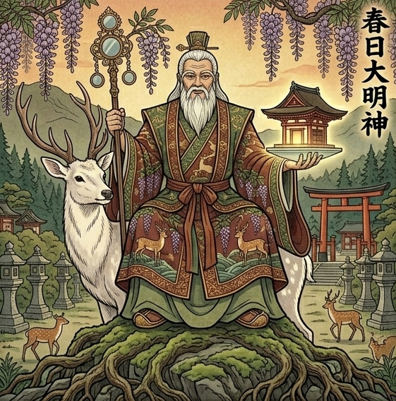

まるっと鑑定書
千晶様とご家族の守護と本音
千晶様と、竜矢様、徹様。
お一人ずつ守っている神様と本音、
そして三人の「関わり」を
ひとつの図にしてお届けします。
🌙 ご家族の関わり図
🌙 お一人ずつの鑑定

火を絶やさず、
家族の営みを守ってきた神様に守られている方です。
あなたの愛情です。
聞きたいのは「大丈夫？」なのに、
口からは「ご飯は食べてる？」に包み直され、
自分の寂しさは「気にしすぎ」で片づけてしまいます。
胸の中で「二人に、任せます」と言ってください。
火は握りしめているだけでは実りになりません。
託したときに、はじめて実ります。
守護神の月は、2027年2月です。

自分で決めて、自分の力で立ち上げてきた方です。
肥沃な土のような、温かい茶色のオーラを持っています。
いつも竜矢様の胸の中に入っています。
口に出さない心配も、愛情として届いています。
あなたの心配を、少し重く受け取ってしまうことがあります。
あなたの愛が間違いなのではなく、
もう自分の足で畑を耕せる人になったということです。
今日あったことを一言だけ伝えてください。
返事を待たずに終えて、胸の中で「二人に、任せます」。
続けるうちに、竜矢様のほうから話しに来る日が増えます。

多くを語らず、
胸の内に熱い気持ちと高い理想を抱いている方です。
深い森のような緑のオーラを持っています。
いちばん気を配っているのは徹様です。
「言ったら心配させる」と本音を呑み込みます。
沈黙は拒絶ではなく、気遣いです。
一度決めたら譲らない頑固さは、あなたとよく似ています。
「話したくなったら聞くね」と一度だけ伝えてください。
返事は求めず、胸の中で「二人に、任せます」。
それが、沈黙を気遣いとして受け取った返事になります。
生まれながらに一対になった兄弟です。
稲が実る畑と、水を蓄える森のように、
お互いの実りに欠かせません。
二人の縁が一つの形を結ぶのは、2027年1月です。
弟は「兄に守られて少し窮屈」と感じています。
どちらも大切に思うからこそ、言葉が少し違う意味で届きます。
あなたが通訳しても、解けるすれ違いではありません。
二人が揃う場で沈黙が落ちても、言葉を足さずに待ちます。
二人が連絡を取り合ったと知ったら、
中身は聞かずに「よかったね」とだけ。
🌙 本鑑定文
千晶様
本式守護鑑定をお受けいただき
本当にありがとうございます。
【今回の鑑定のまとめ】
・竜矢様との間には、深い愛情があります。口に出さない心配は気配になって届くので、問いかけで終わらせない連絡が、二人の距離をやわらげます
・徹様の沈黙は、拒絶ではなく気遣いです。千晶様の気苦労を感じ取って、本音をしまっています
・竜矢様と徹様は、生まれながらに一対になった兄弟です。切れない縁で、お互いが半身のように欠かせません。二人の縁が一つの形を結ぶのは、2027年1月です
・兄は「弟の本音が読めない」、弟は「兄に守られて少し窮屈」と感じています。これが、二人のすれ違いの正体です
・千晶様の癖は「二人を胸にしまって、間に立ち続けてしまう癖」。合図の言葉は「二人に、任せます」で、守護神の月は2027年2月です
「私とそれぞれの息子の関係も知りたいですが
長男と次男の関係の方が
さらに詳しく知りたいです。」
いただいたこの言葉を読んだとき
千晶様がどれほど長いあいだ
二人の息子様のことを
胸の中に置き続けてこられたのか
その重みがまっすぐ心に届きました。
今回千晶様の守護神とつながり
霊視を進めていくと
守護神は何度も同じところへ
私の意識を引き戻してきました。
「どうして私は
二人のことを
こんなにも胸に抱えてきたのだろう」
千晶様がずっと心の奥で抱えてきた
その問いの答えが
そこにありました。
その答えにたどり着くために
まずは千晶様が歩いてきた道から
お伝えしていきますね。
【あなたが歩いてきた道】
若い頃の千晶様は
周りの人の気持ちに
とても敏感な人でした。
自分の言いたいことよりも先に
その場の空気が目に入って
胸の内にしまうほうが
いつも先に動いていました。
そんな繊細さを抱えたまま
お母さんになり
二人の息子様の毎日を
一つずつ整えてこられました。
朝ごはんの支度から
学校のことや進路のこと
お金のことまで
二人が前へ進めるように
手を貸し続けた長い年月でした。
その歩みの途中で
千晶様ご自身が休む時間は
後まわしになる日が
多かったのではないでしょうか。
息子様たちがそれぞれの道を選び
自分の足で立つようになった今も
千晶様の落ち着きと芯の強さは
その歩みの上にあります。
ただ
その背中を視ていて
一つ気づいたことがあります。
千晶様は
ずっと息子様たちのことを
胸の中にしまって
一人で見守り続けてきた人なのです。
【今の千晶様】
その歩き方は
今の千晶様にも
そのまま続いています。
竜矢様にも徹様にも
言いたいことが浮かぶのに
「これを言ったらどう受け取られるだろう」と
先に考えているうちに
口から出るのは
「元気にしてる？」だけで終わっている。
夜に布団へ入ってから
二人の顔が順番に浮かんできて
「あの子は今日どうしていたかな」と
考えているうちに
目が冴えている。
竜矢様の話を聞いているときも
頭の片隅には
徹様の様子が浮かんでいる。
どちらの味方にも偏らないように
言葉を選び直している。
そして
自分の心配や寂しさは
「私が気にしすぎなだけ」と
自分で片づけている。
言葉はしまう。
心配は胸に置く。
二人の間に立ち続ける。
どれも
千晶様の愛情です。
二人を傷つけたくない。
どちらも大切だから
どちらも選びたくない。
その思いが
千晶様の振る舞いを
ここまで品のあるものにしてきました。
でもこの三つには
共通していることがあります。
どれも
自分の気持ちを外に出して分け合う前に
全部を自分の胸で受け止める
ほうへ回っているのです。
それが長く続いた結果
一つの癖ができていました。
「二人を胸にしまって
間に立ち続けてしまう癖」です。
二人のどちらかに元気がないと
「私がもっとこうしていれば」と
まず自分の中に理由を探す。
聞きたいのは「大丈夫？」なのに
口からは「ご飯は食べてる？」と
別の言葉に包み直して出す。
片方の話を聞いたあと
もう片方にどう伝えようかと
頭の中で言い方を組み立てる。
気づけば
自分のためにお茶を淹れる時間が
二人のことを考える時間に
変わっている。
思い当たるところはありませんか？
実はこの癖こそが
冒頭でお伝えした
守護神が何度も私の意識を引き戻した
ところです。
今回の鑑定の
すべての鍵になります。
では
そんな千晶様を守っているのは
どんな神様なのでしょうか。
【あなたの守護神】
千晶様を守っているのは
火産霊神（ほむすびのかみ）です。
火の神様です。
古い日本の物語の中で
火そのものを司る神様として
語り継がれてきました。
お社によって
火之迦具土神や加具土命など
いくつかのお名前でお祀りされています。
昔の人にとって
火はありがたく
そして恐ろしいものでした。
かまどの火は
家族のご飯を炊き
寒い夜を温めてくれる。
けれど
一つ間違えれば
家も村も焼いてしまう。
だから人々は
火が荒れないよう
この神様に手を合わせてきました。
秋葉神社や愛宕神社など
火伏せの神様として
今も全国のお社で
大切にお祀りされています。
そしてこの神様は
暮らしの奥で火を絶やさず
家族の営みを守ってきた
火の神様です。
まるで千晶様そのもののような神様です。
でも
ここからが大切なところです。
日本書紀に伝わる物語では
火の神は
土の女神である埴山姫と結ばれ
稚産霊（わくむすひ）という神様を
生んだとされています。
その神様の頭には蚕と桑が生まれ
お臍には五穀が生まれました。
つまり
火は
自分の手の中だけで守り続けるものではなく
土の女神と結ばれ
子の神様に託されたとき
人の衣と食を養う実りになったのです。
「ほむすび」の
「ほ」は火
「むすひ」は
ものを生み結ぶ力。
火を産み
そして結ぶ力を
そのお名前に宿した神様です。
火は
握りしめているだけでは
実りになりません。
次の命に託されたとき
はじめて
その子の中で実りになる。
「二人を胸にしまって
間に立ち続けてしまう癖」で
歩いてきた千晶様のそばに
この神様がいる。
それは
「その火は握りしめなくていい
二人の中で
もう実り始めている」と
伝えるためにほかなりません。
【あなたの未来に視えるもの】
その火産霊神が
千晶様のこの先の景色を
見せてくれました。
2027年3月
春のお彼岸を過ぎて
桜の蕾がふくらみはじめる頃に
視えている景色です。
昼下がりの光が
窓から長く差し込んでいて
空気に春の匂いが混じっている。
一つのテーブルを
千晶様と竜矢様と徹様が
囲んでいます。
竜矢様が昔の話を切り出して
徹様が
「それは違うよ」と笑いながら返す。
二人の声が
テーブルの上を
行ったり来たりしている。
いつもなら
その間に入って
「まあまあ」と言葉を挟む人が
その日は
自分のために淹れたお茶を
両手で包んで
二人の声を聞いている。
湯呑みの温かさが
掌に広がって
千晶様の口元が
自然にゆるんでいる。
どちらの味方もせず
どちらも止めず
ただそこにいる。
二人の声は
千晶様を通らずに
お互いの間で
ちゃんと届いています。
その兆しは
はっきりと感じられます。
最初の変化が起きるのは
今年の11月です。
ここから先は
この席へ向かう道を
五つに分けて
お伝えしていきますね。
竜矢様との関係のこと
徹様との関係のこと
お二人を結んでいる縁のこと
お二人のすれ違いの正体のこと
これからの兄弟の行方のことです。
⛩️1. 千晶様と竜矢様
まず
守護神が見せてくれた
もう一つの景色からお伝えします。
夜の道が
二つに分かれています。
右の道を竜矢様が
左の道を徹様が
それぞれ歩いている。
その分かれ道の真ん中に
千晶様が立っています。
両手には
一つずつ
小さな灯がありました。
風が吹くたびに
千晶様は背中を丸めて
二つの灯が消えないよう
覆い続けている。
そしてその後ろに
火産霊神が立ち
千晶様の肩に手を重ねていました。
これを視たとき
私は思わず胸が詰まりました。
この光景と一緒に
伝わってきたことがあります。
千晶様が両手で守ってきたのは
竜矢様と徹様の
それぞれの灯でした。
そして
二つの灯を守ろうとするほど
千晶様の両手は
ふさがっていたのです。
ここでも
あの癖が出ていたのです。
では
まず竜矢様との関係から
お伝えしていきますね。
竜矢様を守っているのは
宇迦之御魂神（うかのみたまのかみ）です。
稲や五穀など
食べ物を司る神様です。
古事記では
須佐之男命の御子神とされ
今は稲荷神社として
全国でお祀りされている
とても身近な神様です。
「宇迦」は
食べ物を表す古い言葉。
春に種が蒔かれ
夏の日差しと雨を受け
秋に実りとなって
人の暮らしを支える。
この神様は
その巡りの全部を
見守ってきました。
蒔いたあとの稲は
蒔いた人が引っぱって
育てるものではありません。
土と天気と時間が
育ててくれるものです。
その畑の土のような
肥沃な温かい茶色が
竜矢様のオーラの色です。
地に足がついていて
現実を動かす力を持ち
自分で決めたことを
自分の力で形にしていく。
竜矢様は
誰かに引っぱってもらうより
自分で決めて
自分の力で立ち上げてきた人です。
そして
千晶様の愛情を
竜矢様はちゃんと胸に抱えています。
竜矢様の中には
千晶様の灯が
いつも入っているのです。
千晶様から竜矢様へ向かう愛は
与えて育て
見守る愛です。
千晶様の人生の真ん中には
初めから竜矢様がいます。
愛の深さは
二人が生まれ持った形の中に
すでに刻まれています。
一方
竜矢様から千晶様へ向かう気持ちは
距離のある温かさです。
近くにいても
ぴたりと寄り添うのではなく
少し離れたところから
千晶様を見つめている。
二人は
生まれ育ちの縁が
深いところで結ばれた母子です。
ただ
結ばれている分
遠慮のない言い合いも
生まれやすい二人です。
「家族だから」と
言葉を選ばずに出した一言が
お互いの胸に
思いのほか深く刺さる。
そんな場面が
これまでにも
あったのではないでしょうか。
そして
千晶様が口に出さなくても
心配は伝わっています。
表情に出る。
間の取り方に出る。
「ご飯は食べてる？」の
一言に姿を変えて出る。
竜矢様は
それを愛情だと分かっています。
分かったうえで
自分の足で立っている人だからこそ
少し重く
受け取ってしまうことがあるのです。
千晶様の愛が
間違っているのではありません。
竜矢様が
もう自分の足で畑を耕せる人に
なったということです。
今年は
二人の温かさが
強く結び直される年です。
竜矢様にとって
母のことと弟のことが
同時に胸に浮かぶ一年。
守護神から伝わってきたのは
千晶様の愛を
「口出し」とは違う
「灯」として置けたとき
竜矢様がその灯を
自分から受け取りに来る兆しが
濃くあるということです。
そのために
一つお渡しします。
竜矢様に連絡をするときは
問いかけで終わらせず
今日あったことを一言だけ伝えて
返事を待たずに終えてみてください。
送ったあとに
胸の中で
「二人に、任せます」と言う。
それが
千晶様の灯を
竜矢様の手に握らせず
そばに置いておく合図になります。
続けていくと
竜矢様のほうから
自分の話をしに来る日が
増えていきます。
ただ
竜矢様への手の離し方が分かっても
もう一人の息子様のことが
気になりますよね。
では
徹様とはどうなのでしょうか。
⛩️2. 千晶様と徹様
徹様を守っているのは
春日大明神（かすがだいみょうじん）です。
奈良の春日大社にお祀りされ
千二百年以上前から
人々に手を合わせられてきた神様です。
社の背後には
春日山と呼ばれる森が広がり
千年以上
人の手を入れずに守られてきました。
お祀りされている神様の中に
天児屋根命（あめのこやねのみこと）という
神様がいます。
天岩戸の前で
祝詞を奏上して
神々の言葉の道を開いた神様です。
言葉を使って
閉ざされた場所に
光を呼び戻した神様。
その森のような
深い緑が徹様のオーラの色です。
学びを重ねて
自分を磨くことに喜びを感じる
穏やかで芯の強い人。
徹様は
自分の考えを
多くを言葉にしない人です。
落ち着いて見えて
胸の内には
熱い気持ちと高い理想を
しっかり抱えています。
それを外に出すより先に
まず自分の中で
十分に考え抜いてから
動く人です。
そして徹様は
千晶様の灯が翳らないように
気を配っている人でもあります。
千晶様が心配ごとを胸にしまうとき
その気配は
言葉より先に
徹様のところへ届いています。
千晶様の胸の中の気苦労を
徹様は肌で感じ取って
自分の中にしまう。
「言ったら心配させる」と
本音を呑み込んでいる。
徹様の沈黙は
拒絶とは違います。
千晶様の灯を翳らせないための
気遣いです。
そして二人は
お互いの足りないところを
補い合う母子です。
千晶様の中で足りなかった
自分を支えてくれる力を
徹様が運んでくれています。
千晶様にとって徹様は
自分を支えてくれる
薪のような存在。
徹様にとって千晶様は
自分の中に足りなかった
言葉と行動の熱を灯してくれる
灯のような存在です。
ただ
千晶様が気づかないうちに
徹様に心を寄せすぎる場面も
あります。
つらいことがあった日
最初に頭に浮かぶのは
徹様の顔でしょう。
頼もしさを感じる一方で
徹様はその分だけ
母の気苦労を
背負い込んでいます。
似ているところもあります。
一度こうと決めたら
どちらも譲らない。
その頑固さは
母子だからこそ
よく似ています。
これから先の進み方については
考え方が違うところも
あります。
守護神から伝わってきたのは
徹様が言葉にしない時間は
千晶様を拒んでいる時間とは違い
千晶様を守っている時間だということです。
徹様が黙ったときは
理由を推し量らず
「話したくなったら聞くね」と
一度だけ伝えてみてください。
あとは返事を求めず
胸の中で
「二人に、任せます」と言う。
それが
徹様の沈黙を
気遣いとして受け取ったという
千晶様からの返事になります。
天児屋根命が
徹様の守護の中にいることは
言葉が出てくる日が来る
兆しでもあります。
母と二人の息子様の関係が
見えてきたところで
いよいよ
お二人の間のいちばん深いところに
入っていきます。
⛩️3. お二人を結んでいる縁
ここからは
千晶様が「さらに詳しく知りたい」と
書かれた
竜矢様と徹様のお話です。
守護神から伝わってきたのは
この二人は
生まれながらに一対の兄弟という事実です。
竜矢様と徹様は
生まれたときから
ひと組として結ばれている兄弟です。
惹かれ合い
お互いが欠かせない。
それは
兄弟の中でも
めったにない強さの縁です。
ただ
夫婦でなく兄弟だからこそ
その縁は別の形で出ます。
近すぎる。
離れられない。
つい踏み込んでしまう。
相手の中に
自分の姿を重ねてしまう。
竜矢様の心の中には
いつも徹様の席があります。
何をしていても
どこにいても
弟の様子が
どこかで気になっている。
そして
弟の前では背筋が伸びる。
「立派な兄でありたい」という思いが
竜矢様を
自分で自分を律する人にしてきました。
徹様の心の中にも
兄の席があります。
しかも
とても大切な席です。
徹様にとって兄は
現実の中で
いちばん大切に守りたい相手でもあります。
そして二人は
お互いに足りないものを
運び合っています。
徹様には
外から枠を与えてくれるものが
もともと少ないのです。
何かを決めるとき
背中を押す力や
区切りをつける力。
その足りない部分を
竜矢様が
自分でも気づかないうちに
運んでいます。
兄の一言で
弟の輪郭がはっきりする。
そんな場面が
これまでにも
何度もあったのではないでしょうか。
もう一つ
竜矢様が無意識に担っている役目があります。
千晶様の気苦労を感じ取って
内にこもりそうになる徹様を
外へ連れ出す役です。
母のそばで
本音を呑み込んでしまう弟に
外の風を入れる。
竜矢様は
そうやって弟を
守ってきました。
反対に
徹様が自分の道を動き出すとき
その動きが
竜矢様の足元を揺らすことがあります。
弟が決めたこと
弟の周りの人たち
弟の進む方向。
そのどれもが
竜矢様の胸に
圧のようなものとして届く。
二人は
2009年頃から2018年頃にかけて
お互いが
人生のいちばん大きなテーマでした。
思春期から青年期にかけて
相手を意識しない日は
なかったのではないでしょうか。
そして今
二人とも
人生の軸が
家族のもとから離れて
自分にとっていちばん近い人との関係へ
移っていく時期にいます。
しかも今年
お二人は同じ年に
同じ場所に立っています。
竜矢様は
弟のことと
母のこと。
徹様は
兄のことと
母のこと。
二人とも
同じ二つのテーマが
今年同時に浮かんでいる。
千晶様が今年
この鑑定を受けられたのは
その流れを
肌で感じておられたからです。
この二人の縁を守るために
千晶様にお渡ししたいことがあります。
竜矢様の様子を徹様に
徹様の様子を竜矢様に
運ばないでみてください。
片方の話を
もう片方に持っていくのを控える。
そのかわりに
二人の間の道を
二人が自分で歩けるようにしておく。
それが
千晶様の手を通さずに
二人が直接つながる道を
開く合図になります。
お二人の守護神を並べると
自然の中に
一つの理が重なります。
稲が実る畑のそばには
水を蓄える森があります。
森が蓄えた水が
畑に流れて
稲を実らせる。
宇迦之御魂神と春日大明神が
竜矢様と徹様を守っているのは
お互いの実りに
この二人が欠かせないからです。
ただ
これほど深く結ばれた二人なのに
なぜすれ違うのでしょうか。
⛩️4. お二人のすれ違いの正体
竜矢様の目に映る徹様は
気品があって
誇り高い人です。
けれど
何を考えているのか
読めない。
本音が奥にあって
どこから踏み込めばいいのか
分からない。
それでも
情の深さだけは
はっきり感じている。
守りたいのに
踏み込みきれない。
それが
竜矢様の胸の中の
弟の姿です。
徹様の目に映る竜矢様は
頼れる人です。
いつも先に立って
自分を守ってくれる兄。
けれど
何かを決めようとするとき
兄がもう道を示している。
守られていると分かっているのに
自分の返事を
待ってもらえていない感覚。
それが
徹様の胸の中の
兄の姿です。
兄は「弟の本音が読めない」。
弟は「兄に守られて少し窮屈」。
どちらも
相手を大切に思っているからこそ
生まれている感覚です。
そのために
二人の間では
言葉がほんの少し違う意味で
届きやすくなっています。
兄が「心配だから」と言った一言が
弟には「まだ頼りないと思われている」と
聞こえる。
弟が黙った沈黙が
兄には「何か隠している」と
聞こえる。
そんなすれ違いが
これまで何度も
繰り返されてきました。
そして竜矢様は
弟のことで
気を揉んで疲れやすい人です。
弟に与えても
返ってこないような感覚。
恩を返そうとしても
うまく届かないもどかしさ。
弟のことを気にかけ続ける分
竜矢様自身の幸せや
自分の時間が
後まわしになりやすい。
徹様は
兄の言葉の影響を
とても強く受ける人です。
兄の一言が
胸に長く残って
気分にまで響く。
けれど
窮屈さを言葉にしないまま
自分の中に溜めている。
このすれ違いのあいだに
千晶様は
ずっと立ってきました。
兄の気持ちを聞いて
弟の気持ちを推し量って
どちらにも傷が残らないように
言葉を選び続けてきた。
でも
二人のすれ違いは
千晶様が通訳しても
解けるものにはなりませんでした。
二人が
自分の言葉で
直接触れたときにしか
ほどけないものだからです。
守護神から伝わってきたのは
二つのことでした。
兄は
弟の本音を
読もうとしすぎなくていい。
読めない部分があっても
そこに弟がいると
信じていればいい。
弟は
兄に守られる窮屈さを
言葉にしていい。
兄は
それを聞いたとき
先回りしていた手を
ちゃんと引っ込められる人です。
そして千晶様は
間に立たなくていい。
二人が揃う場で
沈黙が落ちたとき
千晶様が言葉を足して
その場を埋めないでみてください。
沈黙の間に
二人が自分の言葉を探す
時間が生まれます。
その時間が
二人の言葉が育つ土になります。
では
このお二人の関係は
これからどう動いていくのでしょうか。
⛩️5. これからの兄弟の行方
結論から言うと
お二人の関係は
今年から来年にかけて
大きな転換期に入っています。
今年は
徹様の中に
これまで足りなかった熱が入る年です。
言葉や行動に熱が宿って
本音が外に出やすくなる。
兄との間でも
これまで呑み込んできた一言が
形になって出ようとしています。
そのとき
竜矢様は
受け止める側に立ちます。
竜矢様の暮らしの中でも
立場や責任が切り替わる
節目が近づいています。
弟の言葉を
聞き入れる余裕が
増えていく流れです。
そして来年。
お二人とも
自分自身が主役になる年に入ります。
それぞれが
自分の仕事や
自分の暮らしや
自分にとっていちばん近い人との時間に
意識を向けていく。
お互いのことを
気にしすぎない距離が
自然にできていきます。
その距離は
遠ざかりとは違います。
互いの足元がしっかりしたからこそ
できる距離です。
竜矢様は
仕事の評判が上がる流れの中で
言葉の出し方や人付き合いでは
揺れる場面もあります。
徹様は
心の重さがほどけて
住まいや暮らしのかたちを
自分で決めていきます。
そして千晶様。
息子様たちが自分の人生を築いていくことが
そのまま千晶様の実りになる十年に
入っています。
二人が千晶様の手を離れて
育っていくことは
千晶様が与えてきた愛が
実を結ぶということです。
最後に
お渡ししたいことがあります。
二人が連絡を取り合ったと知ったとき
理由や中身を聞かずに
「よかったね」とだけ
受け取ってみてください。
聞かないことで
二人の間の道が
二人のものとして育っていきます。
この道すじは
これから先の時間の中で
どう進んでいくのでしょうか。
【今後の四ヶ月】
ここまでお伝えしてきた
「二人に、任せます」の練習は
この先の四ヶ月で
一段ずつ進んでいきます。
2026年11月：見守る側に立つ月
この月は
千晶様を支える力が
いつもより厚くなる月です。
息子様たちのことに
意識が向かいやすく
考えごとが増える月でもあります。
夜に
竜矢様か徹様のことが
頭から離れなくなる場面が
巡ってきます。
そこで
考えを巡らせるかわりに
胸の中で
「二人に、任せます」と言ってみてください。
その一言が
見守る側に立つ
最初の一歩になります。
2026年12月：揺れの中でも手を出さない月
この月は
息子様たちの話が
表に浮かびやすい月です。
月の半ばには
竜矢様の33歳の誕生日があります。
新しい十年の入り口に立つ節目で
竜矢様の立場や責任が
切り替わっていく時期です。
お祝いの言葉を送る場面が
巡ってきます。
返事が短くても遅くても
そこで言葉を足さず
送ったところで手を離してください。
それだけで
灯を置いて手を離す練習が
進みます。
2027年1月：二人の縁が形になる月
この月は
今回の鑑定の中で
いちばん大切な月です。
竜矢様と徹様の縁が
二年がかりで
一つの形を結ぶ月だからです。
年が明けて
どちらかが
相手の話をふと口にする場面が
巡ってきます。
同時に
家族の空気がぴんと張る瞬間も
あります。
結びつきと緊張が
同時に出る月ですが
どちらも
形が決まる前の揺らぎです。
そんな場面では
間に入らず
「そうなんだね」と受けて
答えを足さずに聞いてください。
その場面が来たら
二人の縁が動き始めた
合図です。
2027年2月：守護神の月
2月4日の立春を境に
新しい一年の流れに入ります。
この月は
火産霊神の力が
もっとも強く届く月です。
千晶様の灯が
息子様たちのためだけでなく
千晶様ご自身のために
灯りはじめます。
二人から離れた時間に
自分のために選んだものが
目に留まる場面が
巡ってきます。
そこで遠慮せず
自分のために手に取ってください。
この月は
竜矢様が気を張りすぎる日も
あります。
そんなときも
問いかけを重ねず
灯を置いておく連絡だけにしてください。
この月に
火産霊神ゆかりの神社へ
足を運んでみてください。
【今年と来年】
2026年は
家の空気や
息子様たちのことが
表に浮かんでくる年です。
それは
家族が揺らいでいるわけでなく
千晶様の中で
気づいて整理して言葉にする力が
高まっている年だからです。
2027年は
息子様たちの人生が実り
千晶様ご自身も
満たされていく年です。
胸の近いところにあった気苦労が
ほどけはじめます。
冒頭でお伝えした
あの春のテーブルで
二人の声を聞いていたのは
千晶様でしたね。
竜矢様も徹様も
千晶様が頼っていい
大切な人です。
頼っても大丈夫な人は
すでにすぐそばにいます。
その景色へ向かう最初の年が
2027年です。
🔮 もう少し先に視えていること
ここまでお伝えしてきたこととは別に
霊視の最後に
もう二つ視えたものがありました。
一つ目は
うれしい兆しです。
来年の春から夏にかけて
千晶様ご自身に向けて
「一緒に行きませんか」と
声がかかる場面があります。
息子様のためでなく
千晶様ご自身の楽しみのために
時間を使える流れです。
二つ目は
気に留めておいてほしいことです。
千晶様が間から降りて
見守る側に立ち始めると
どちらかの息子様が
最初のうちだけ
戸惑う場面があります。
いつものように連絡が重なったり
意見を求められたりして
千晶様の胸が
また動きかけるような場面です。
さらに
二人が自分たちで話せるようになった頃
千晶様の胸に
役目が終わったような寂しさが
よぎる日もあります。
怖がらなくて大丈夫です。
間から一歩降りた人に訪れやすい
形が変わる前の揺らぎのようなものです。
今の時点で心に留めてほしいのは
戸惑った連絡が来たとき
すぐに答えを出さず
一度受け止めてから
答えを相手に返すことです。
ただ
それがいつ頃
どんな形で表れるのか。
そして
どうすれば良い流れに変えていけるのか。
ここはもう少し深く
視させていただく必要があります。
また別の機会に
改めてお伝えさせてくださいね。
⛩️守護を受け取る方法
でも
大丈夫です。
今回の霊視で
火産霊神の守護の力を
千晶様の奥底に
宇迦之御魂神の守護の力を
竜矢様の奥底に
春日大明神の守護の力を
徹様の奥底に
置いてきました。
千晶様の灯が消えることなく
二人の息子様の道を
明るくしていけるよう
支えていきます。
この文章を読みながら
胸が少し温かくなる
肩が軽くなる
なぜか安心する
そんな感覚があれば
もう守護は届き始めています。
何かを頑張る必要はありません。
ここまで読んでくださったなら
もう十分に受け取れています。
もし余裕がある時だけ
次のことを試してみてください。
【火産霊神ゆかりの神社へ行く】
秋葉宮
（福岡県久留米市本町202）
秋葉神社
（福岡県久留米市櫛原町49-1）
愛宕神社
（福岡県久留米市御井町297）
黒島神社
（福岡県久留米市田主丸町豊城1651）
鷲尾愛宕神社
（福岡県福岡市西区愛宕2-7-1）
などが
火産霊神にご縁のある場所です。
秋葉宮が
お住まいからいちばん近く
火之迦具土神をお祀りしています。
鷲尾愛宕神社は
火産霊神をお祀りする社として
県内でもよく知られた神社です。
どこか一つ
ご縁を感じる場所へ
お参りしてみてください。
2月に参拝されると
とくに力を持ちます。
もしお二人の守護神のお社にも
足を運ばれるなら
こちらもご縁のある場所です。
竜矢様の宇迦之御魂神
金丸稲荷神社
（福岡県久留米市花畑1-18-6）
稲荷松丸神社
（福岡県久留米市諏訪野町）
大学稲荷神社
（福岡県久留米市御井町2608）
稲成神社
（福岡県久留米市田主丸町野田1243）
浮羽稲荷神社
（福岡県うきは市浮羽町流川1514-1）
徹様の春日大明神
春日神社
（福岡県八女郡広川町太田1050-1）
御勢大霊石神社
（福岡県小郡市大保1032）
今古賀三島神社
（福岡県柳川市三橋町今古賀478）
春日大明神
（福岡県みやま市山川町河原内）
天照神社
（福岡県宮若市磯光266）
神社では
参拝の際に
心の中でこの祝詞を唱えてください。
祓え給い、清め給え、
神ながら守り給い、幸え給え
（はらえたまい、きよめたまえ、
かむながらまもりたまい、さきわえたまえ）
願い事は唱えず
「これまで見守ってくださって
ありがとうございます
私は二人の息子を信じて
見守る側に立ちます
どうか見守っていてください」
という形で伝えてください。
【夜に灯りを一つ残す】
寝る前に
部屋の灯りを一つだけ残して
深呼吸を一度。
その日の心配を
「二人に、任せます」と言いながら
息に乗せて吐き出す
小さな儀式です。
【自分のためのお茶を淹れる】
もう一つ
自分のために
温かいお茶を一杯淹れる時間を
作ってみてください。
息子様たちのためでなく
千晶様ご自身のために灯す
小さな火です。
⛩️あなたと響き合うパワーストーン
千晶様には
この鑑定の中で
「二人に、任せます」という
合図の言葉をお渡ししました。
火産霊神の守護は
すでに千晶様の中に届いています。
ただ
長く続いてきた癖は
忙しい日ほど戻ってきます。
夜に布団へ入ってから
二人の顔が順番に浮かんできて
目が冴えてしまう。
そんなとき
手首の石にそっと触れて
「二人に、任せます」と言う。
石は
その合図を思い出すためのものです。
その合図を手首に置けるよう
千晶様と響き合う石で
ブレスレットをお作りします。
1. カーネリアン
ろうそくの灯のような
温かなオレンジを宿す石です。
「二人に、任せます」と
言い出す瞬間の声を支えてくれます。
2. アンバー
肥沃な土のような
温かな茶色を宿す石です。
言ったあとに
握っていた手がゆるんで
肩の力が抜ける落ち着きをくれます。
3. グリーンアベンチュリン
深い森の緑を宿す石です。
言えなかった日も
明日また言えるように
そばで待っていてくれます。
この中から
千晶様に一番合う組み合わせを選び
一粒ずつ、手で編んでお作りします。
千晶様が
二人の毎日を一つずつ整えてこられたように
私も一粒ずつ
想いを込めて仕上げます。
火産霊神の力が最も強く届く
2月に間に合うよう
ご連絡から十日以内にお送りします。
気になった方は
「詳細希望」とだけ
メッセージをくださいね。
【結びの言葉】
千晶様
ここまで読んでくださって
本当にありがとうございます。
「二人を胸にしまって
間に立ち続ける」ことで
二人の息子様を守り続けてきた千晶様。
その気持ちは
ちゃんと届いていました。
言葉にできなかった昼間も
夜の布団で二人の顔を思い浮かべた時間も
どちらも大切だから
どちらも選ばなかった優しさも
すべて、確かに積み重なっています。
分かれ道の真ん中で
両手に二つの灯を包んでいた千晶様の
すぐ後ろで
火産霊神は立ち
ずっと肩に手を重ねてくださっていました。
その火は
千晶様のためのものでもありました。
だからもう
間に立たなくていいんです。
二人の歩みを
信じて見守っていい。
心配を
胸の中だけにしまわなくていい。
自分のためにも
灯をともしていい。
春のテーブルで
自分のために淹れたお茶を
両手で包んで
二人の声を聞く日は
もうすぐそこまで来ています。
千晶様は
幸せになっていい。
守られています。
その事実を
どうか受け取ってください。
本日より遠隔守護祈祷を行い
千晶様と竜矢様と徹様の幸せを願います。
千晶様の未来に
オレンジ色のあたたかな光が満ちますように。
追伸
ブレスレットが気になった方は
「詳細希望」とだけ送ってくださいね。